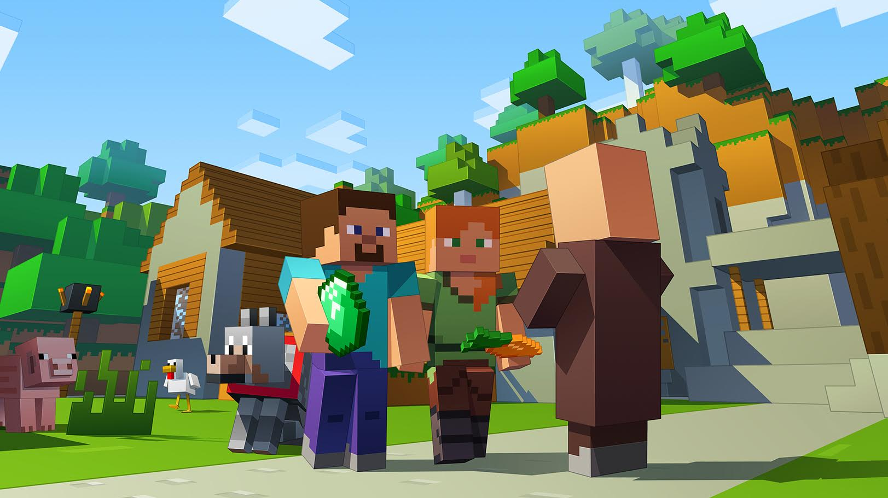
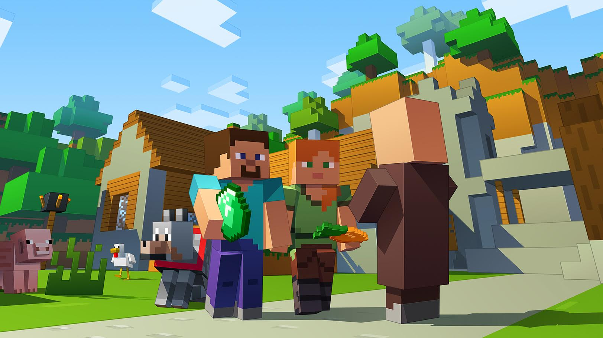
 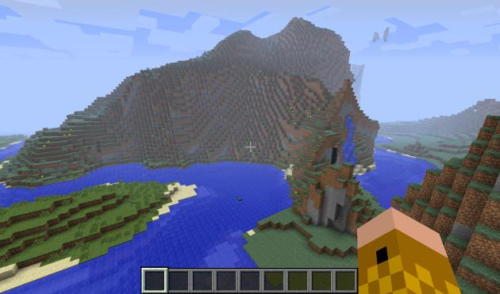
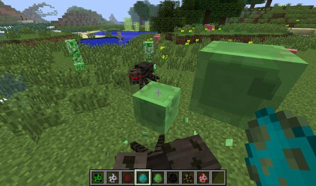
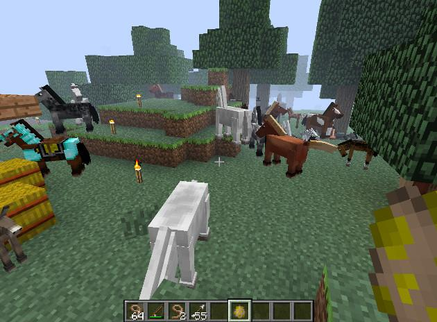
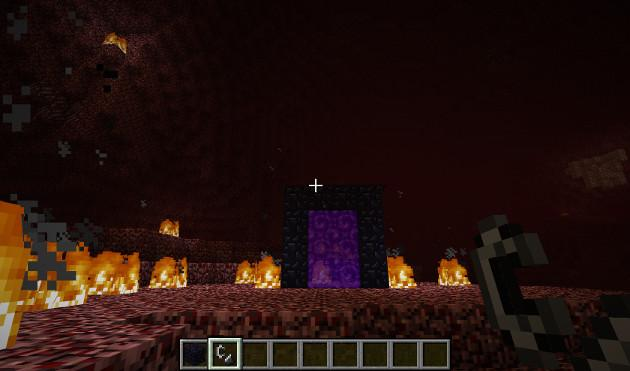
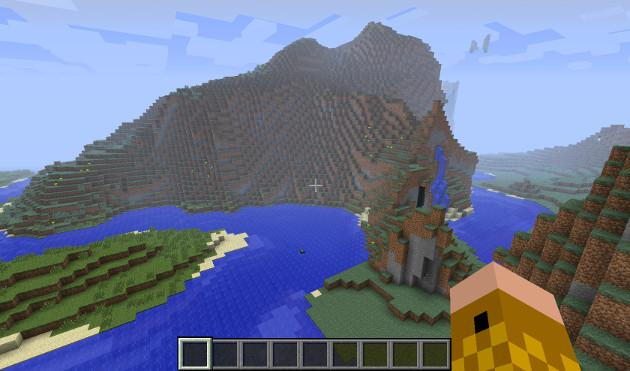
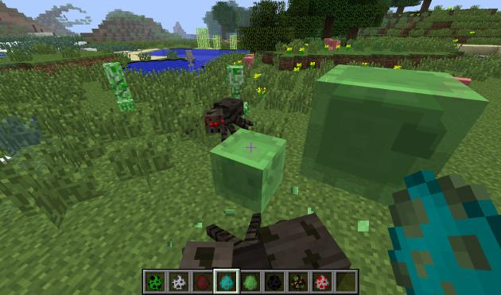
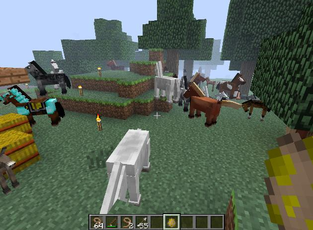
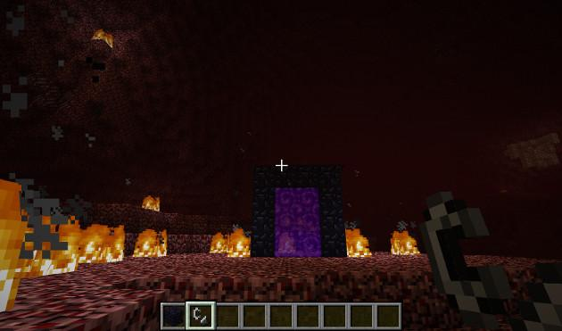
 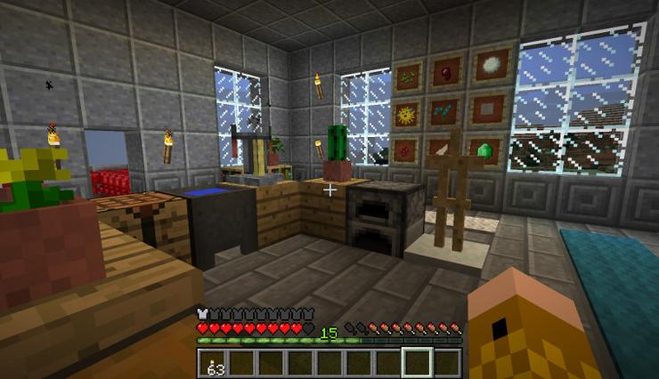
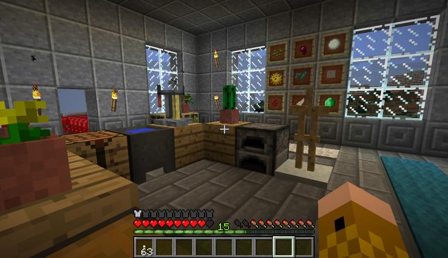
 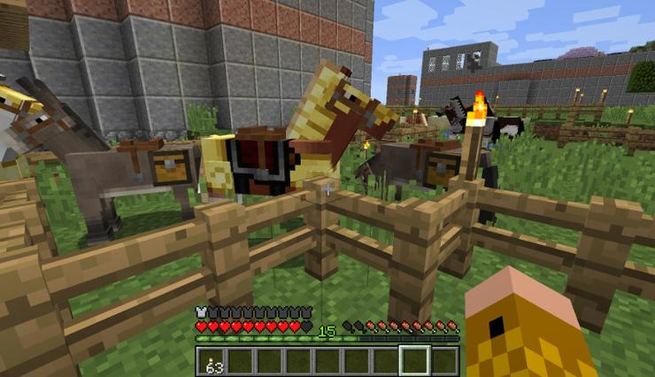
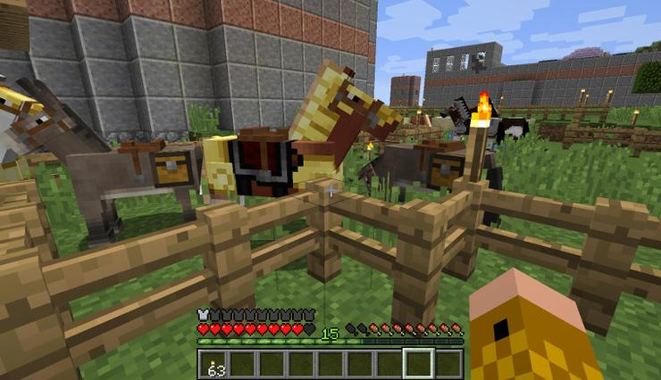


TheMineShaft
MINECRAFT PC!
The Mario Bros Tech Server For Minecraft Personal Computer Edition.
Click the four boxes below to visit the bottom portion of each page.
Our History
Read the section below to find out the history of the TheMineShaft Network.
The TheMineShaft Network was started by mariobrostech. mariobrostech originally had an MCPE Server along with remotevase who also had his own. mariobrostech eventually decided to stop his MCPE Server, while remotevase turned his server into The ServeQuake . After a short while, mariobrostech wanted to have a server again, but this time, he wanted it to be on MCPC! At first, it was a minor server called TheMineShaft, which was only up every few hours per day. Soon, it grew into a Creative Server with many players. remotevase and mariobrostech were some of the first people to build on the server. Then, we added Kylosaurus to our team! He helped us set up our ranking system, as well as fixing many bugs. In addition, he gave us many new ideas for plugins! Soon after, masteremotevase added those plugins, and implemented whatever features that were needed into the server. Then, more recently, mariobrostech added a Minigames server. It was a huge success. That success made mariobrostech decide that he wanted to create a Plots creative server, as well as a survival server, both in addition to the minigames server. The old creative server would now become private (only for whitelisted players). A hub server would also be created, with the hub built by masteremotevase (Of course). Soon after, we renamed the server from TheMineShaft to TheMineShaft!
Contact Us
Fill out the form below to contact the staff team via email.